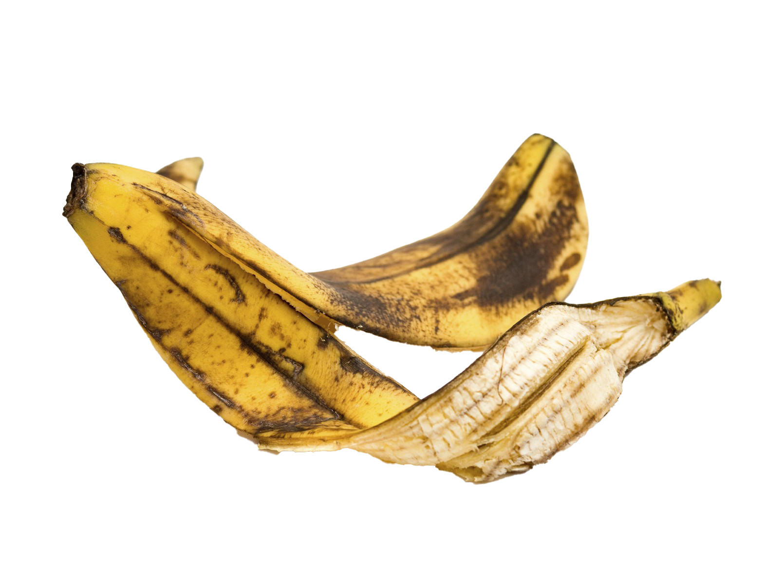

1 - 4살 아이 그림
2 - 현대미술작품 (“A tree in Naples” by Willem de Kooning)
3- 4살 아이 그림
4 - 4살 아이 그림
5 - 현대미술작품 (“Laburnum” by Hans Hoffman)
6 - 현대미술작품 (“Woods” by Gerhard Richter)
7 - 4살 아이 그림
8 - 4살 아이 그림
9 - 4살 아이 그림
10 - 현대미술작품 (“Coffee Thyme” by Sam Gilliam)
11 - 4살 아이 그림
거칠게 말하면 '어린아이 그림을 들고와서 이빨만 잘 까면 가치가 생기는 것'을 현대미술이라고 생각한다. 현대미술에는 늘 이런저런 설명이 있고 어떠한 의도로 만들었다고 하지만, 반대로 막 그려놓고 그럴 듯한 의미를 말빨로 창조해냈을 것이라는 추측 또한 있다. 작품의 기술적 수준, 미술품 평가의 객관적인 기준 부재, 엇나간 수요와 공급, 현대예술과 대중예술 사이 장벽, 투기와 탈세 수단, 소수의 고액 후원자에 의한 과대평가, 부조리한 주종 관계, 자질 검증의 노력 부족, 위작, 과도한 학벌주의, 빈부격자 방관 등 현대미술에 대한 논쟁이 존재한다. 하지만 입으로 하는 예술, 난잡한 행위와 얽힌 예술에 대한 반감은 단편적인 비난일뿐이다.
현대미술은 예술가의 생각이나 감정을 표현하는데 집중하기 때문에 작품에서 미술가가 무엇을 나타내고자 하는지, 그것을 위해 어떠한 독창적인 표현법이 사용되었는지가 중요하다. 따라서 미술가는 ‘잘 만든’ 작품에 집착하기보다 자신이 표현하고자 하는 바를 자신만의 방식으로 표현하는 것을 중시한다. 현대미술은 작품 그 자체를 중요하게 여기지만, 이와 함께 그것을 받아들이는 관람자의 여러 가지 해석도 중시한다. 왜냐하면 작품이 받아들여지는 과정 또한 현대미술을 구성하는 중요한 요소라고 여기기 때문이다. 또한 현대미술은 다양한 방식으로 표현된 미술가의 생각을 담고 있으면서, 감상자의 자유로운 해석과 상상을 자극한다. 따라서 우리가 이러한 현대미술의 특징을 이해한다면 그것에 조금 더 편안하게 접근할 수 있는 길도 열리게 된다.
